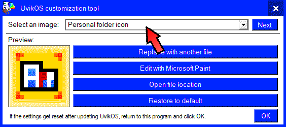

First, select the image that you want to edit.
picture:

After selecting your image, select which way you want to edit it.
There are four options available:
- Replace with another file:
This option will open a File Explorer. In it, select the file you want to replace the selected image with.
- Edit with Microsoft Paint:
This option will open Microsoft Paint. Edit the image, save it and close Microsoft Paint.
- Open file location:
This option will open a File Explorer with the folder containing the selected image open. This option is intended for experienced users.
- Restore to default:
This option will restore the image to before it was edited.
After you are finished with editing the images, press the
OK button. That will save the changes and restart UvikOS so that the changes take effect.